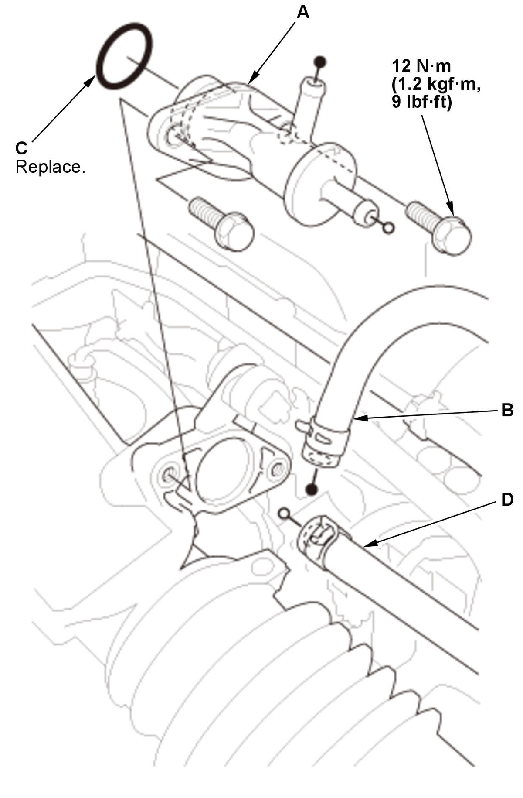
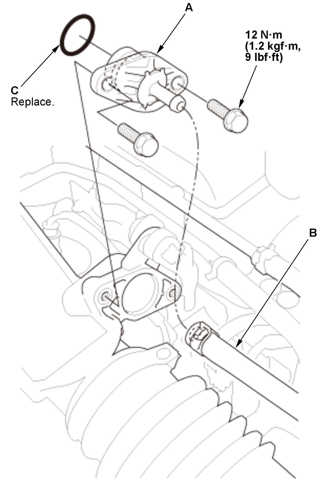

Removal and Installation
WARNING:
Flammable - Keep Fire Away
NOTE: Refer to the Fuel and Emissions Systems Service Precautions before disconnecting the fuel line.
- EVAP Canister Purge Nozzle - RemoveFig 1: EVAP Canister Purge Nozzle Components With Torque Specifications (L15B7/L15BA/L15BY) (USA/Canada/California Models)

Courtesy of HONDA, U.S.A., INC.Fig 2: EVAP Canister Purge Nozzle Components With Torque Specifications (L15B7/L15BA/L15BY) (Mexico Models)
Courtesy of HONDA, U.S.A., INC.1. USA/Canada/California models: Disconnect purge tube B and purge tube D. 2. Mexico models: Disconnect purge tube B.
3. Remove the EVAP canister purge nozzle (A) with the O-ring (C).
- All Removed Parts - Install
1. Install the parts in the reverse order of removal with a new O-ring.